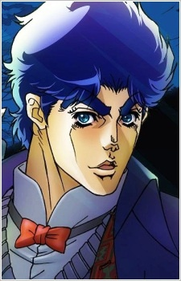

Дата рождения: 4 Апреля 1868
Возраст: 12 (Том 1, гл. 1-5);20 (Начиная с гл. 6)
Раса: Человек
Пол: Мужской
Национальность: Британец

Джонатан Джостар
Информация
Описание
Джонатан Джостар (ジョナサン・ジョースター Jonasan Jōsutā?) — первый ДжоДжо, представленный в серии; протагонист из части Призрачная кровь.
Джонатан — единственный сын состоятельного предпринимателя по имени Джордж Джостар. Он честный и добрый молодой человек, чья жизнь обернулась трагедией после появления в его жизни приёмного брата, Дио Брандо, в последствии ставшего основным антагонистом серии. Обладал хамоном, силой, которой обучил его Уильям Антонио Цеппели.
Джонатан — единственный сын состоятельного предпринимателя по имени Джордж Джостар. Он честный и добрый молодой человек, чья жизнь обернулась трагедией после появления в его жизни приёмного брата, Дио Брандо, в последствии ставшего основным антагонистом серии. Обладал хамоном, силой, которой обучил его Уильям Антонио Цеппели.
Манга
Аниме